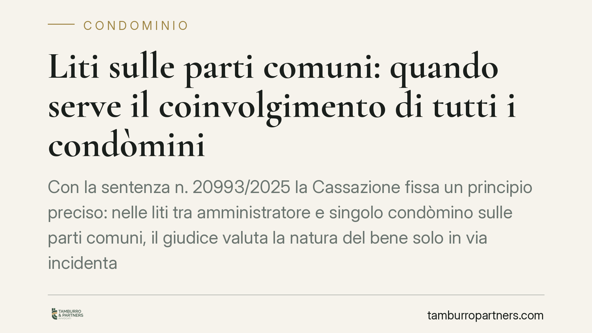

Liti sulle parti comuni: quando serve il coinvolgimento di tutti i condòmini
Con la sentenza n. 20993/2025 la Cassazione fissa un principio preciso: nelle liti tra amministratore e singolo condòmino sulle parti comuni, il giudice valuta la natura del bene solo in via incidentale. Per una pronuncia definitiva sulla proprietà occorre chiamare in causa tutti i condòmini e proporre un'apposita domanda di accertamento. Una distinzione che incide su strategia processuale ed efficacia della sentenza.

Il caso
Le controversie sulle parti comuni di un edificio sono tra le più frequenti nel contenzioso condominiale. Un condòmino contesta l'uso di un cortile, di un sottotetto o di un muro; l'amministratore agisce o resiste a tutela del condominio. Fin qui la prassi.
Il nodo affrontato dalla Corte di Cassazione (sent. n. 20993/2025) riguarda l'efficacia di ciò che il giudice decide in questi giudizi. Quando, nel corso di una lite tra amministratore e singolo condòmino, emerge la questione se un bene sia o meno comune, quella valutazione ha valore definitivo? Oppure resta un passaggio funzionale alla decisione sulla domanda principale?
Inquadramento normativo
Il punto di partenza è l'art. 1117 del Codice civile, che elenca le parti dell'edificio presunte comuni salvo titolo contrario: suolo, fondazioni, muri maestri, tetti, scale, cortili e così via. La norma pone una presunzione, superabile con prova documentale.
L'amministratore, ai sensi dell'art. 1131 c.c., rappresenta il condominio e può agire o essere convenuto per le questioni che rientrano nelle sue attribuzioni. La sua legittimazione, però, riguarda la gestione e la conservazione delle parti comuni, non la titolarità dei diritti reali dei singoli.
Qui interviene la distinzione decisiva. La Cassazione ribadisce che, nel giudizio tra amministratore e singolo condòmino, la verifica sulla natura condominiale del bene è compiuta in via incidentale: serve a decidere la domanda concreta, ma non produce un accertamento vincolante sulla proprietà. Per ottenere una pronuncia definitiva e opponibile a tutti occorrono due condizioni.
La prima è il litisconsorzio necessario di tutti i condòmini: trattandosi di diritti reali che li riguardano, ciascuno deve poter partecipare al processo. La seconda è un'apposita istanza di accertamento ai sensi dell'art. 34 del Codice di procedura civile, che consente di trasformare una questione pregiudiziale in oggetto di una decisione con efficacia di giudicato.
Implicazioni pratiche
La differenza non è teorica. Chi si limita ad agire contro il condominio nella persona dell'amministratore, senza coinvolgere gli altri condòmini e senza formulare la domanda di accertamento, rischia di ottenere una sentenza che risolve il singolo conflitto ma non stabilisce in modo stabile a chi appartenga il bene.
Il risultato è una tutela parziale. Il condòmino che credeva di aver chiuso la partita sulla proprietà di un'area potrebbe trovarsi, a distanza di tempo, di fronte a una nuova contestazione da parte degli altri comproprietari, che in quel giudizio non erano presenti e non sono vincolati dalla decisione.
Per l'amministratore vale il rovescio della medaglia: una gestione prudente impone di valutare quando la lite tocca solo profili di uso e conservazione — di sua competenza — e quando invece investe la titolarità del diritto, che esige il coinvolgimento dell'assemblea e dei singoli.
Il principio incide anche sui costi e sui tempi. Avviare il giudizio nella forma sbagliata significa, nella migliore delle ipotesi, dover integrare il contraddittorio in corso di causa; nella peggiore, ottenere una pronuncia inutile ai fini pratici.
Cosa fare in concreto
- Qualifica l'oggetto della lite prima di agire: distingui tra contestazione sull'uso o sulla gestione della parte comune e contestazione sulla proprietà del bene. Le due ipotesi seguono percorsi processuali diversi.
- Verifica la legittimazione: se la controversia riguarda la titolarità di un diritto reale, l'azione contro il solo amministratore non basta. Individua tutti i condòmini da chiamare in causa.
- Formula la domanda corretta: quando serve una decisione definitiva sulla natura comune del bene, proponi espressamente l'istanza di accertamento ex art. 34 c.p.c. Non affidarti alla valutazione incidentale del giudice.
- Recupera i titoli di proprietà: atti di acquisto, regolamento contrattuale e planimetrie possono superare la presunzione dell'art. 1117 c.c. Raccoglili prima dell'avvio del giudizio.
- Coinvolgi l'assemblea quando necessario: per le questioni che eccedono le attribuzioni dell'amministratore, la delibera e il mandato specifico evitano eccezioni di difetto di legittimazione.
Una lettura attenta della pronuncia suggerisce di impostare la strategia processuale fin dall'origine, perché la scelta tra accertamento incidentale e accertamento con efficacia di giudicato determina il valore stesso della sentenza che si otterrà.
---
*Contributo informativo a cura di Tamburro & Partners — Avv. Giuseppe Tamburro. Non costituisce parere legale.*
Ogni condominio ha una storia a sé.
Se gestisci un'amministrazione e vuoi un confronto su una specifica questione condominiale, scrivi allo studio. Ti rispondiamo entro un giorno lavorativo.